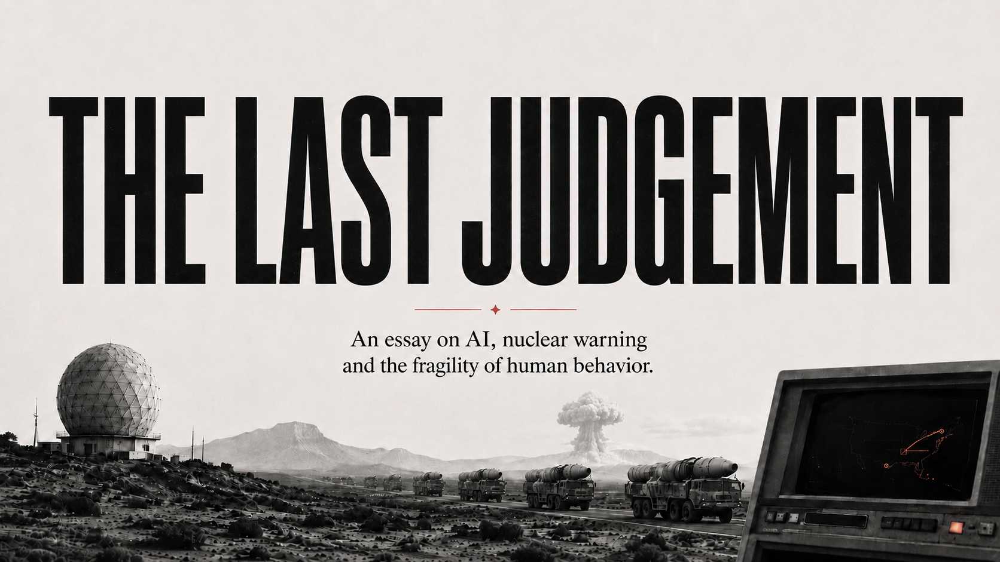
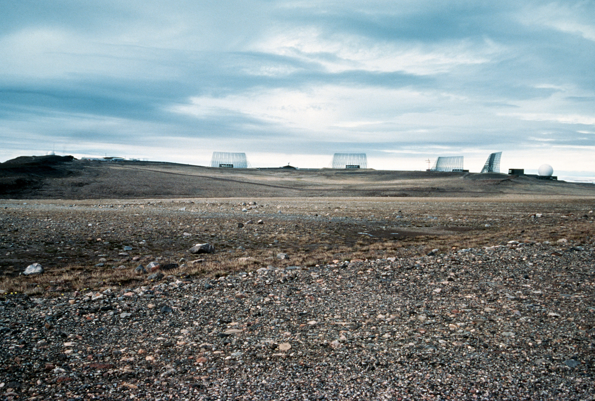
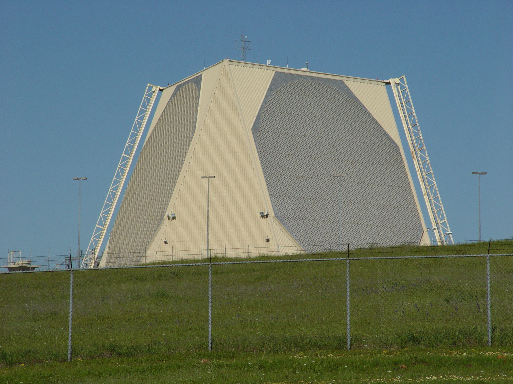
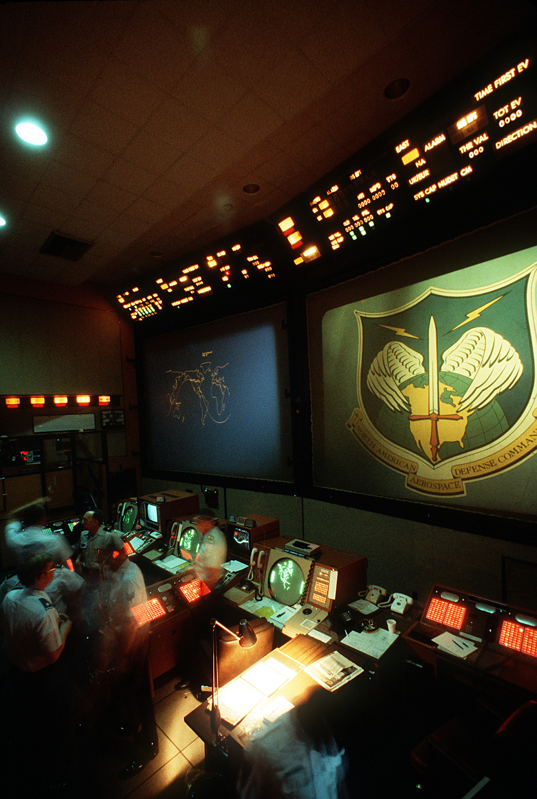
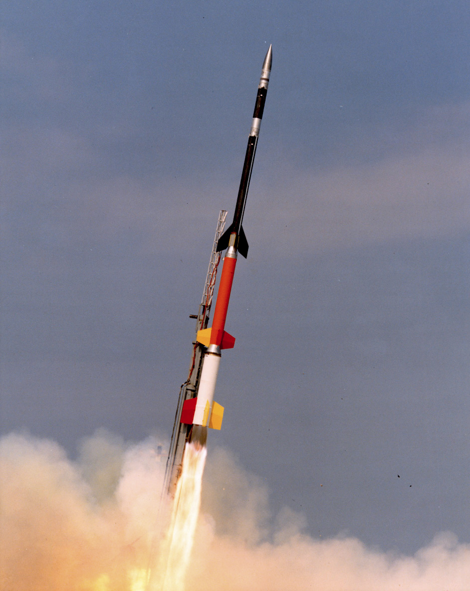
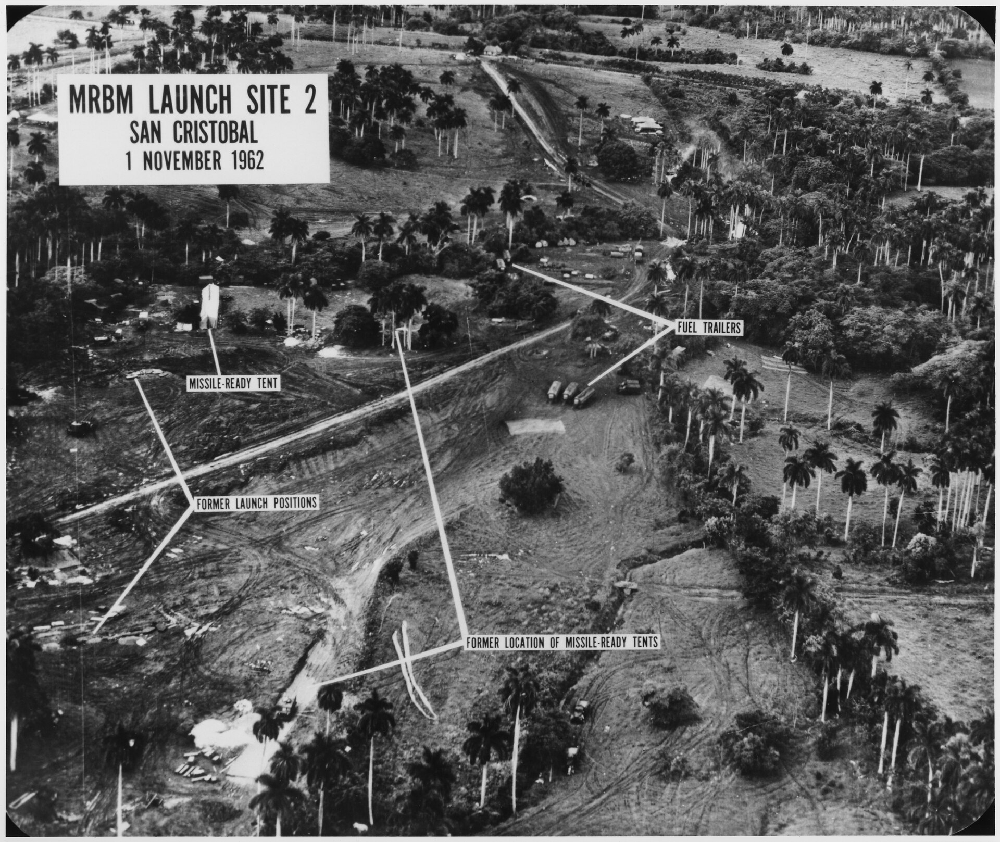
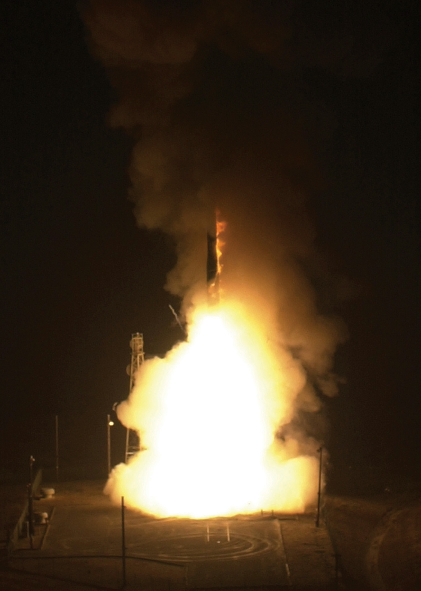

▼ Scroll to begin

Act one / The machine sees
Ballistic Missile Early Warning System, Thule, Greenland, 1984. U.S. Air Force (MSgt Glen Plummer) · public domain, via Wikimedia Commons
I. The promise
Ask anyone in government who worries about artificial intelligence and the bomb, and you will hear the same sentence, worn smooth by use. A human stays in the loop. The Americans wrote it into the 2022 Nuclear Posture Review. Biden and Xi said it to each other in 2024. Britain and France keep their own versions. The pledge is that no machine will ever choose to burn a city, that a person will always give the order.
It is a decent promise, and it does not reach very far. It guards the last inch of the process, the hand on the key, and says nothing about the mile in front of it. An order is only as good as the picture placed in front of the man who gives it, and that picture is now assembled, ranked, and written by machines and by the tired people who tend them. A human at the end of the line is worth little if everything reaching him has already been shaped.
Begin with what the machines do well. For most of the nuclear age the hard part of warning was seeing. Radar stopped at the horizon. There were never enough satellites, and the gaps between them were wide. Governments spent fortunes to buy more eyes.
A modern fusion system turns that problem inside out. It watches heat from orbit, radio chatter, commercial photographs, the beacons on merchant ships, the running feed of the world's news, and it never looks away. On a slow night it might see something close to this:

Fusion system · overnight summary · illustrative
EVENTS REVIEWED: 41,000,000 · FLAGGED ANOMALOUS: 12,000 · SURFACED FOR HUMAN REVIEW: 5
Read the funnel from the bottom up and you have the subject of this essay. One person can decide. A few can brief. A small team can check. Above them sits a machine that reads forty million things between dusk and dawn. The wide end keeps widening. The narrow end is made of people, and people are the same animal they were in 1962.
II. The arithmetic
There is a piece of arithmetic at the centre of this that no engineer can repeal. A real attack is among the rarest events on earth. When a system hunts through millions of ordinary events for the one that almost never comes, almost every alarm it raises will be false. This holds however good the system is. Thomas Bayes worked it out in the eighteenth century, and it has not grown gentler since.
Move the sliders. Make the machine as good as you can picture, and watch the two numbers at the bottom.
A nuclear decision is worse than rare. It happens once or never. A confidence score describes the long run, how often alarms like this one turn out to be real across many cases. Here there is no long run and there are no many cases. To tell the duty officer the machine is right ninety-four times in a hundred is to answer a question he cannot ask with a number he cannot use. This is the first place judgment gets quietly asked to do a job that looks like arithmetic and is not.
III. Cry wolf
None of this is a thought experiment. Every trade that runs on high-volume alarms has already lived it and reached the same verdict by its own road. Hospitals call it alarm fatigue. A nurse whose monitors cry two hundred times a shift, and mean something once, learns to walk toward them rather than run, and she is not wrong to. Security teams call it alert triage and drown the same way. Psychologists gave it the oldest name, after the boy in Aesop, and have measured it in the laboratory since Breznitz in 1984.
Two things follow, and they pull opposite ways. The tuning-out is not laziness and it is not cowardice. It is the correct response to a channel that is almost never right, and the ICU nurse and the missile crew arrive at it for the same sound reason. Yet artificial intelligence makes the flood worse at the very moment it makes each drop cleaner. Multiply the watching a thousandfold, improve the accuracy tenfold, and you have still delivered a hundred times more false alarms into the same small room of people. The sliders in the last figure are not a toy. They are a staffing chart, and the staff is losing.

Act two / The record
The NORAD command post, Cheyenne Mountain, Colorado. U.S. Department of Defense (SSgt Bob Simons) · public domain, via Wikimedia Commons
IV. The record
The false warnings of the Cold War are usually told as anecdotes, the sort of thing that fills out a documentary. They are better read as a dataset, small and grim. Each is a case where the machine said war and a human said wait. Open each one below and watch a single thing: how it was caught.

Petrov's night in 1983 deserves one more sentence, because it names what we are about to lose. He could doubt the satellites because the satellites were simple enough to doubt. He had helped build the software and knew it was young. He could ask a plain question, why would anyone open a world war with five missiles, and the question had weight. And he had a second pair of eyes, ground radar the satellites could not corrupt, that saw nothing coming. A deep-learning system offers none of that. It offers a number. You cannot ask a number why five.
V. Anatomy of a doubt
What did Petrov actually hold at half past midnight? Not courage in the abstract. Four ordinary, checkable things, and it is worth testing each against the machine we are now buying. Reveal the modern column and count how many survive.
Three of the four are gone, and not through anyone's malice or bad engineering. They are gone because of what a learned model is. Only the fourth survives, the officer's own sense of what the enemy would and would not do, and it survives only where an institution has troubled to protect the attention it costs. That is a design requirement. It appears in no design document.

Act three / Interpretation
U.S. reconnaissance of a ballistic-missile site at San Cristóbal, Cuba, 1962. The missiles sat in the frame before anyone read them for what they were. U.S. National Archives · public domain
VI. Interpretation
Picture the fusion system one night raising five things at once in the Taiwan Strait. Each is plausible. Each wears a confidence score. And the score cannot tell the watch the one thing it needs, which is whether a signal points at something real or is the machine finding a face in the clouds. Tap each contact and see how the night actually resolved.
The ranking and the truth run in different orders. The Rocket Force spike at seventy-seven per cent was noise, and it came from a unit that fires both nuclear and conventional missiles, so no sensor on earth can read which. The dull shipping anomaly at sixty-four per cent was the real one. A watch team has only so many hours before dawn and must choose what to chase. The score is its only guide, and the score points the wrong way. This is Wohlstetter's finding about Pearl Harbor, the signals all present and lost in the noise, fitted with faster plumbing. James Acton's problem sits on top of it. When the same launcher may be conventional or nuclear, every guess about the enemy's intent is already a guess about whether a nuclear war has begun.

Act four / The gap
A Minuteman intercontinental ballistic missile in test flight. A depressed-trajectory strike leaves minutes; the machines have already spent most of them. U.S. Air Force · public domain
VII. The gap
The gap would be a curiosity if not for counterforce. As AI-fused sensing grows good enough to find the hidden submarines and the mobile missiles, the hiding that made retaliation certain begins to fail. When your own forces might not survive a first strike, waiting turns expensive, and the pull grows to fire on warning rather than on attack. Slide the decade below and watch the window in which a Petrov could exist. It closes.
VIII. Transmission
A warning does not pass from one machine to one commander. It runs through a mesh of them: the ship's watch, the fleet centre, the national desk, an allied capital across an ocean. At each stop a human sits beside a model, and the model boils down the summary the last model made. Here the many-hands problem turns concrete. Every hand-off is a chance to lose the caveat, and the caveat is the whole point. Write one careful report and follow it down the line.
IX. The mirror
Here is the move that keeps none of this on one side of the ocean. Everything the warning mesh does can be seen. Satellites swing to look at a new patch of sea. Alert traffic rises. A carrier shifts station. A leak becomes a headline. The enemy's fusion system takes all of it in, ties it together, and reports, correctly and with real confidence, that something is being prepared. Every line of that report is true. Every act it describes was caused by a false alarm, a confident mistake, or a summary that shed its doubt three hops back.
Foreign fusion system · morning summary · illustrative
0412 — US COLLECTION RETASKING OBSERVED. ASSESS: THEY SAW SOMETHING. CONFIDENCE: 81%
0455 — US ALERT PROPAGATION DETECTED, 11 MINUTES. CAUSE: UNOBSERVED. CONFIDENCE: 89%
0558 — US THEATER POSTURE ADJUSTMENT. ASSESS: DELIBERATE SIGNALING. CONFIDENCE: 84%
0620 — ALLIED-PRESS REPORTING: "INVASION PREPARATIONS." INGESTED AS INDEPENDENT INDICATOR.
0630 — SUMMARY: 4 CORRELATED BEHAVIORS. RECOMMEND PROPORTIONATE POSTURE ADJUSTMENT.
Tomorrow the other side makes its proportionate adjustment, and your own system sees it: more indicators, confidence climbing. Two well-calibrated machines, each reading the other's reaction to nothing, each feeding the other. The Cold War held in part because its logic was legible across the line. Both sides understood assured retaliation the same way. Two black boxes cannot offer each other that understanding. They read everything about each other except the one thing that matters, which is the mind that is not there.
China sharpens every edge of this. Its missiles are entangled, conventional and nuclear riding the same launchers, so any fused judgment about its forces is already a judgment about whether a nuclear campaign has begun. And China is standing up its first launch-on-warning posture now, buying the fusion system before it has ever grown a Petrov. The American and Soviet systems earned their doubt the hard way, through 1960 and 1979 and 1980 and 1983. A force that starts with machine-speed warning and no scars gets the confidence and skips the schooling.
X. The precedent
In the mid-1980s the Soviet Union built a system the West later called the Dead Hand. If the leadership were killed, if the sensors agreed on the flashes and the tremors and the silence on the command lines, a few junior officers in a buried bunker could fire command rockets that would order the surviving force to launch. It was not a machine deciding alone. It was a machine narrowing the last human choice down to a handful of frightened men and a checklist.
The lesson cuts both ways, and both edges matter. Perimeter was built to relieve the exact pressure of the gap. By making retaliation certain even after a decapitating strike, it let the leadership wait instead of firing early. It was automation used as a brake, made from the same technology everyone fears as an accelerator. Then the Soviets kept it secret, and a brake nobody knows about steadies nothing. That was Jervis's oldest point, that a signal you never send cannot reassure the man it was meant for. Today the same logic comes back, not as one bunker but as software threaded through every layer of the warning system, where the brake and the accelerator ship in the same update and nothing as honest as a bunker tells you which is which.
Act five / The quiet transfer
A Defense Support Program early-warning satellite. Its infrared eye has watched for missile plumes since the 1970s; its heirs now rank what a human will ever see. U.S. Space Force (A1C Shaun Combs) · public domain
XI. The quiet transfer
So trace where the machine actually stands tonight, on both sides of the water. Read down the ladder. Notice that no rung asks anyone to delegate anything. Each is a sensible convenience. Together they carry the weight.
Now set the ladder beside what governments have actually signed.
| U.S. Nuclear Posture Review (2022): keep a human "in the loop" for actions critical to nuclear employment. | Governs authority — above L7 |
| Biden–Xi joint statement (Nov. 2024): human control over the decision to use nuclear weapons. | Governs authority — above L7 |
| U.K. and French commitments (2022): human political control of nuclear use. | Governs authority — above L7 |
| Levels L0 through L7 — the warning, the ranking, the drafts, the menus, the summaries, the mirror. | Unaddressed |
Diagnosis without design is just commentary. Five rules follow from the record above, and each rests on something that has already worked at least once.
No one gave the machine the authority to launch. They gave it the warning, the shortlist, the clock, the summary, and the first draft of everyone's fear. That was enough.
The machine makes seeing faster. It cannot make judging faster. The danger begins the moment we treat the two as one.
The real question was never whether you can trust the machine. It is older and harder. Can you govern the warning system before it governs you? To govern it you have to hold on to two facts the technology keeps trying to blur. A confidence score is not a reason. And the scarce thing in a modern crisis is not information, of which there is now a flood, but the human and institutional room to weigh it and act. Artificial intelligence does not widen that room. Through the flood, it crowds it.
A general who lived through the last age said that we came out of it by some mixture of skill, luck, and divine intervention, and that he suspected the last of having done most of the work. The machine improves the skill. It does nothing for the luck. All it asks of us is that we not mistake the one for the other.
Images — all public domain, via Wikimedia Commons: Castle Bravo and Castle Romeo nuclear tests (U.S. Dept. of Energy, 1954); BMEWS radar, Thule (U.S. Air Force, MSgt Glen Plummer, 1984); PAVE PAWS radar, Beale AFB (U.S. Missile Defense Agency); NORAD command post, Cheyenne Mountain (U.S. DoD, SSgt Bob Simons); Defense Support Program satellite (U.S. Space Force, A1C Shaun Combs, 2023); U-2 reconnaissance of San Cristóbal, Cuba (U.S. National Archives, 1962); Minuteman launch (U.S. Air Force, 2005); Black Brant sounding rocket (NASA/Wallops). Title and interstitial artwork generated for this essay.
The last judgement
Castle Bravo, Bikini Atoll, 1 March 1954. U.S. Department of Energy · public domain, via Wikimedia Commons